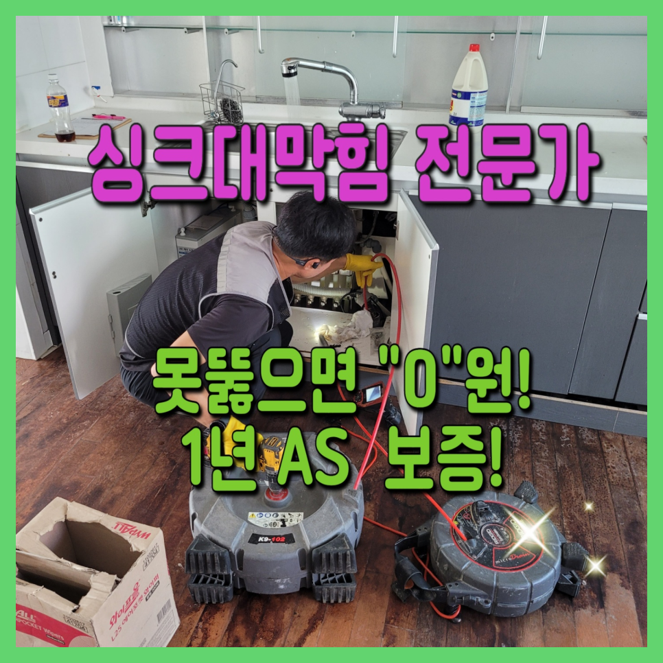
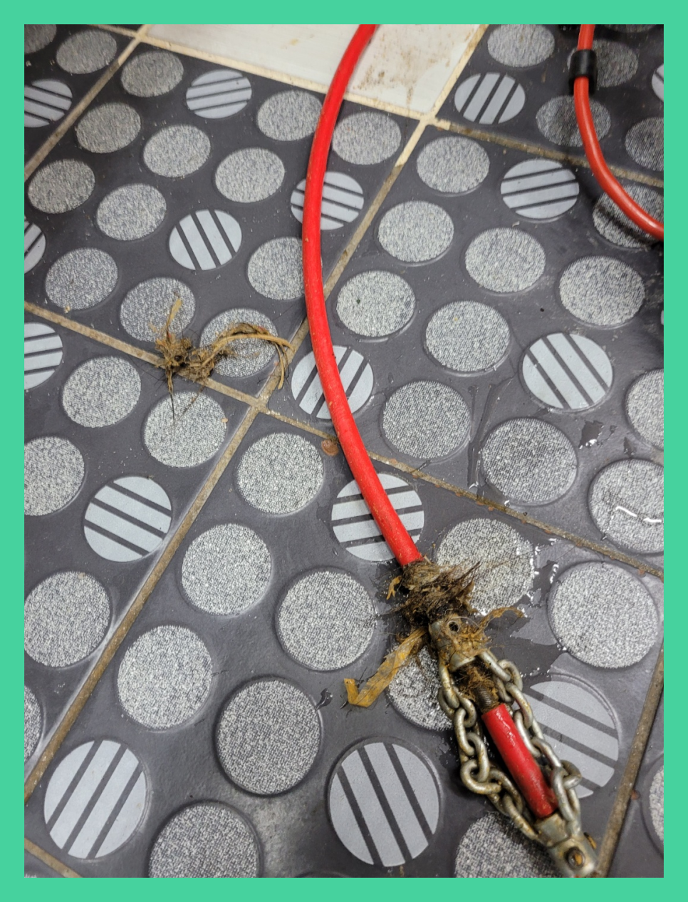
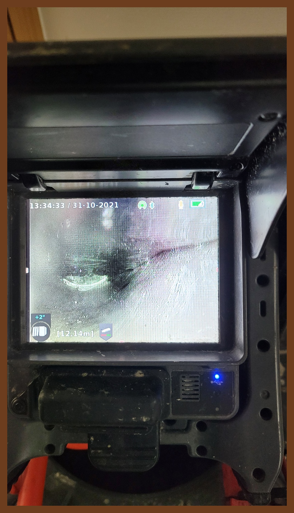
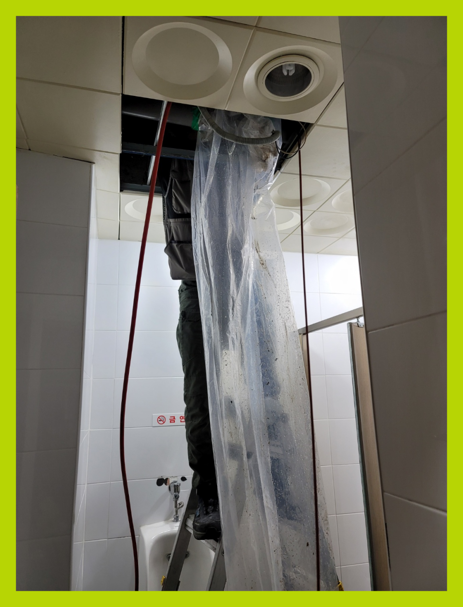
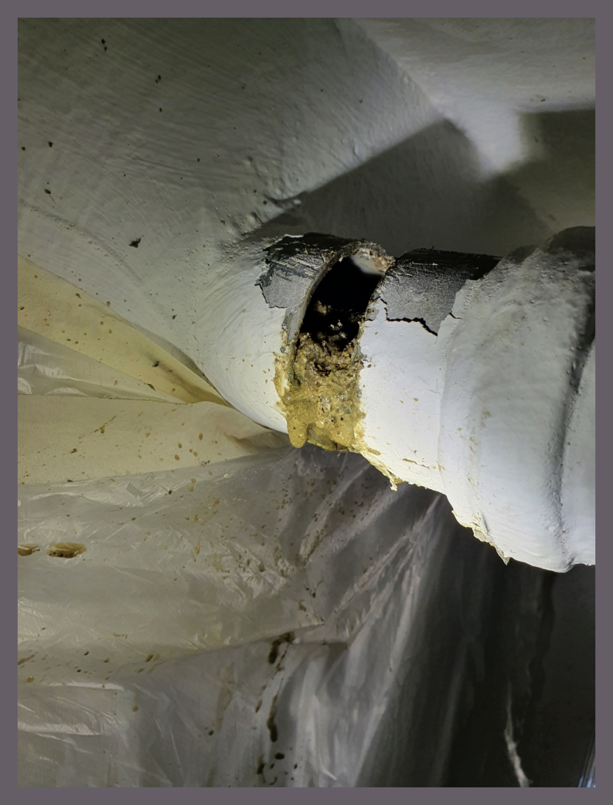
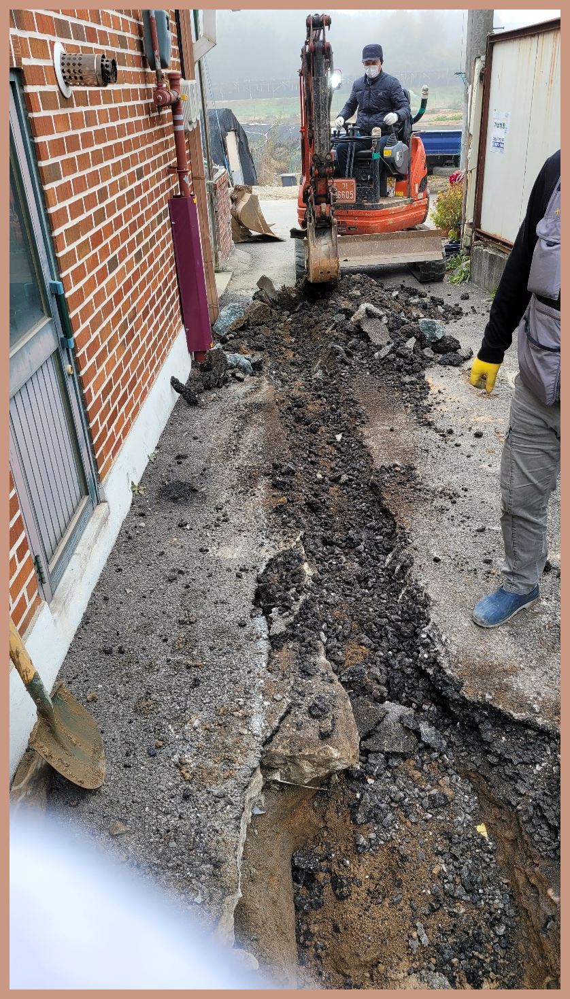
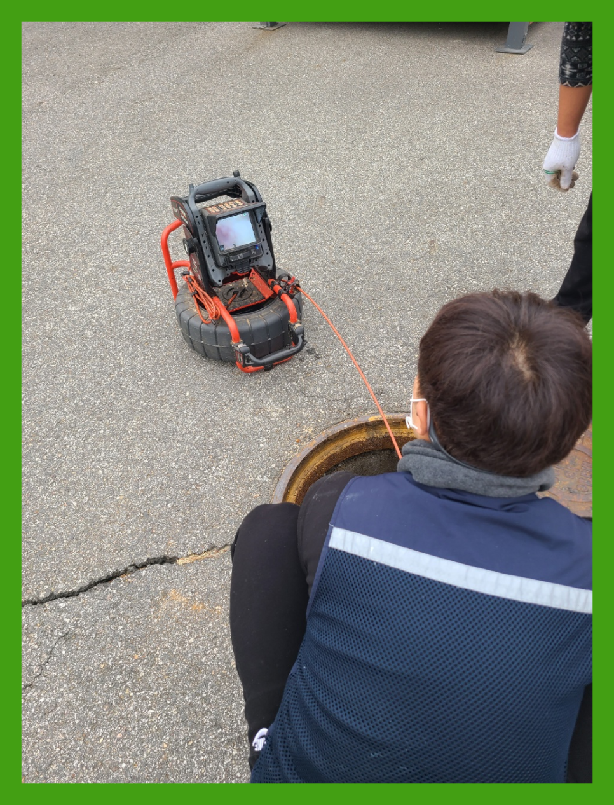

🏠 수원 권선구 오목천동 하수구뚫는업체 고색동 하수구설비
수원 고색동 싱크대막힘 전문 시공 후기

📋 작업 개요
- 위치: 수원 고색동, 고색동, 수원
- 서비스 유형: 싱크대막힘, 변기막힘, 하수구막힘, 배관막힘, 누수수리, 역류해결, 뚫는업체, 고압세척
- 작업 일시: 2023. 9. 7. 18:36
- 업체명: 하수구수사대 (010-5615-2118)
🔍 문제 상황
생활하는데에 없으면 안되는것이 물과 하수구인데요, 우리집을 포함해서 상가등등 하수구가 막히게 되면 여간 답답하지 않을수 없습니다.
가시적으로 확인이 되는 이물질로 인하여 막힘 것이라면 그 부분만 수리하면 처리될수 있겠지만 눈에 보이지 않는곳에서 이물질로 인해 막힘 현상이 발생하면 재빨리 세제물을 풀어넣어보고 뚫어뻥으로 뚫어봐도 수습이 되지 않는 경우도 많습니다.
수원 권선구 오목천동 하수구뚫는업체 고색동 하수구설비
단순 막힘 말고도 역류 같은 문제처럼 하수구에는 생길 수있는 증상들은 매우 많습니다. 그럴 때 전문 업체를 통해 뚫기도 하지만 저렴한 곳만 알아보시는 것은 오히려 나중에 더 큰 피해를 커울수 있다는 것을 말씀 드리고 싶습니다.
수도권 모든 지역에서 경력 있는 기사님들이 대기하고 있기 때문에 계신 지역이 어디든지 방문 드릴 수 있으며 아무리 심각한 상황이라고 할지라도 빠르게 대처해 드리기 위해서 1시간 이내 도착을 약속하고 있습니다.

🔎 원인 분석
💡 전문가 진단: 수원 권선구 오목천동 하수구뚫는업체 고색동 하수구설비
배관 내부에 어느 정도 이물질이 쌓여있는지 확인하기 위해서는 내시경 카메라를 넣고 원인을 파악하는데요. 기름 슬러지가 원인이 되어 막혔다면 내시경 카메라가 뿌옇게 보이기 때문에 일단 석션 장비로 통수 작업을 시켜준 뒤에 내시경을 다시 넣게 됩니다.
고민하실 적에 갖추고 있는 장비에 대해서도 체크해야 합니다. 매장이라거나 큰 건축물에서 뚫음 받아보신 고객의 경우에는 이런 사항들을 궁금해하십니다.
배관 안에 있는 것이 무엇인지 파악도 못해놓고 통수만 해준다면 다시 막혀버리게 되는 경우의 수만 늘어나게 되겠죠. 스케일링을 할 때는 여러 번 받을게 아니라 딱 한 번만으로 해결해야 해요.
하수구막힘을 해결하기 위해서는 여러가지 장비가 동원이 되어야 하고 그러한 장비를 사용하는 기술자의 기술 역시도 매우 중요한 부분입니다.최근에 하수구 뚫음 업체가 많이 생겨나고 있어 어떠한 업체에 맡기느냐도 중요한 부분인데요.
배수구를 뚫는 약품이나 뚫어뻥 등등 다양한 방법으로 통해 해결해 보았지만 쉽지않아 결국 수지구 동천동 하수구막힘 전문업체를 알아보셨다고 합니다.요즘엔 업체가 워낙 많아서 어느곳으로 연락을 해야할지 고민스러우셨지만, 저희에게 요청을 하게 되셨다고 잘부탁드린다고 말씀하셨습니다.

🔧 작업 과정
보통 셀프로 하는 방법은 배관 속의 이물질은 그대로 존재하는데 단순히 물이 배수될 정도로만 통수가 된 것이나 비슷해서 근복적인 원인을 제거하기 위해서는 고압세척이 필요로 합니다.
그런데다가 이같은상황에서는 증식되는 기름때로인해 누수증상도 생겨버려 이웃집에 영향까지 끼쳐버리게되는데요.이럴때에는 뚫음은 뒷전이고 피해까지 메꿔줘야하기때문에 고객님의 부담만 늘어나버리게됩니다.
일반적으로는 어찌해결해보려고합니다 급해지셔서 서둘러서뚫으실텐데요. 대한민국에서는 막혀버린배수관을 뚫어버리기위한 약품등등들을 살수가있어요.
배관막힘으로인해 이러지도 저러지도못한다면 곧장 출동해서 해결해드리고있으니 언제든지 전화만해주세요.저희팀은 하청업체가 절대아니며 경력있는분들로만 구성돼있는 시스템들이 짜여져있답니다.
하루빨리 뚫는것이 하나밖에없는 대책이란것을 기억하셔야됩답니다.최첨단기계와 많은전문지식을 갖추어진분들로 모여있어서 어디든지 확실하게수리 할수있어요!
여러종류의 설비기업때문에 고를수가 없으시면 경력많은 경력자와 납득가능한 견적비용까지 포함한 저희업체를 왜 믿어야하는지 알려드리겠습니다
특별히 기름류의 조리를 하는 곳에서 더욱 많이 발생하는 기름 슬러지지만 빵이나 커피에도 기름기가 많아서 기름 슬러지가 잘 생기기 때문에 관리를 자주 해줘야 합니다.
션 작업은 떨어진 석회들을 흡입해서 빼내는 작업으로 석션기를 사용해서 이물질들을 다 제거하고 나서 하수구 안을 살펴봅니다. 배관 안을 보니 작업을 진행하기 전과 후의 모습이 완전히 다르며 전혀 다른 배관이라는 생각이 들 정도로 깔끔해진 걸 확인할 수 있었습니다.


✅ 작업 완료
구석구석 살펴본 뒤 조치하지 않으면 기름때들은 쌓이기만 하면서 예상치 못한 증상까지도 만드는 것입니다. 이렇기 때문에 작업을 하게 되면 어떤 현장이든지 전체 구간 세척작업하고 있습니다.
여러모로 신뢰가는 실력있는 전문업체라는 점을 기억하고 막힘 문제를 고민 중이신 분께서는 언제든지 연락주세요^^
#싱크대뚫음,#씽크대뚫는업체,#변기뚫는곳,#욕실역류




⚠️ 베란다 누수 및 방수 관리 방법
- ✅ 비가 많이 올 때 창틀 주변이나 아래층 천장에 얼룩이 생기는지 정기적으로 확인해 보세요.
- ✅ 우수관 주변 실리콘 마감이 들뜨거나 깨진 틈새가 있는지 손상 여부를 수시로 체크하세요.
- ✅ 베란다 바닥 타일의 줄눈(메지)이 소실되면 그 틈으로 물이 침투하여 누수가 유발됩니다.
- ✅ 누수 의심 증상 발견 시 방치하면 아래층 손실이 커지므로 즉시 전문가의 진단을 받으십시오.
💡 핵심 정리
- 확실한 장비 작업(내시경 점검 및 샤프트 스케일링)으로 원인을 뿌리 뽑습니다.
- 작업 후 1년 이내에 동일한 부위 재발 시 100% 무상 A/S 서비스를 보장합니다.
- 서울 · 경기 · 인천 전 지역에 24시간 언제든 긴급 출동할 수 있도록 항시 대기 중입니다.
❓ 자주 묻는 질문 (FAQ)
🚨 수원 고색동 싱크대막힘 문제로 고민이신가요?
정확한 원인 진단과 확실한 시공으로 재발 없는 해결을 약속드립니다.
24시간 긴급 출동 | 서울 · 경기 · 인천 전지역 | 1년 내 재발 시 무상 A/S